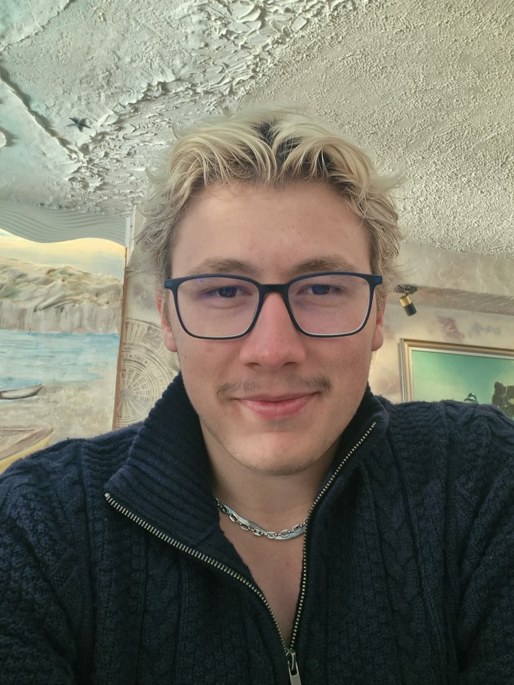

Karabük Üniversitesi
2023 - Devam Ediyor
Bilgisayar Mühendisliği bölümünde 2. Sınıf olarak öğrenimine devam ediyor.
Kendini haberleşme sistemleri, model eğitimi ve yazılım geliştirme konularında geliştiren bir mühendis adayı.

Öncelikle amacım Atatürk'ün bize emanet ettiği bu ülkeyi daha ileriye götürmek için elinden ne geliyorsa yapmaktır. Bilgisayar Mühendisliği 2. Sınıf öğrencisiyim. Kendini gerek kulüp yönetiminde gerek ise iş deneyiminde geliştirmiş ve 2 yıldan beri projelerde görev alarak teknik becerisini geliştirmekte. Bu sürede haberleşme, gömülü sistemler ve görüntü işleme kısımlarında kendime fark kattım. Hala projelerde çalışıyorum ek olarak okulumu daha iyiye taşımak için gerekli olduğunu düşündüğüm yönlerini geliştiriyorum.
Gelecek yılda planım ise hocalarım ile projelerde çalışıp daha katma değeri yüksek ürünler geliştirmek. Ve kurduğum ekip ile girişim fikri geliştirip ilerlemesini sağlamak.
2023 - Devam Ediyor
Bilgisayar Mühendisliği bölümünde 2. Sınıf olarak öğrenimine devam ediyor.
2019 - 2023
Okul basketbol takımında oynadı. Yazılım ile ilgilenmeye ve Nesne Yönelimli Programla (OOP) üzerine çalıştı.
Hava savunma projesinde görüntü işleme kısmı projenin kilit noktası olması ile birlikte projede gömülü sistemler ve görüntü işleme alanalarında çalıştım şuan proje hala devam etmekte ve ÖTR aşamasından 94 olarak yolumuza devam ediyoruz.
Yolov11 C++ RoboflowAdalm Pluto SDR cihazlarından ve gerekli algoritmalar ve mimariyi kurma kısmında görev alıyorum. Rasperry PI ile birlikte veri trafiğini ve isterleri karşılamak üzerine çalışmamı yürütüyorum.
STM32 Linux Rasperry PITakımımız ile 5 alt banttan jammerlı bir şekilde veri iletimi gerekli modülasyonlar ve algoritmalar ile veri iletimi yaptık. En iyi takım Ödülünü aldık.
SDR RF GNU RadioKarabük Üniversite'mizde neden olmasın diyerek geliştirmeye başladığımız, insanların yazılım sektöründeki geniş yalpazesinden kendine uygun olan alanı daha erken bulup gelişmeyi tetikleyen bir internet sitesi tasarladık. Bunu yaparken gerekli makaleler ve puanlama sistemi için bilinir yöntemlere başvurduk.
HTML CSS JavaScript07/2024 - 08/2024
Formhane idari kısmında çalışırken SQL tabanlı uygulama geliştirme ve ERP sistemi üzerinden veri kontrolü ve giriş çıkış yapılması. Ana görevimin dışında Etiket dikim ve Nakış bölümü sorumlusuydum vardiya yönetimi ve üretilenlerin takibi raporlaması sorumluluğumdaydı.
Hedeflediğim alan ise haberleşme ve görüntü işleme alanlarında ortak bir payda da çalışmak.
Bu alanda çalışmak için ise sistem mimarisini kurabilme, algoritmalar ve optimizasyonu iyi yapabilmek için sistem gereksinimlerini güncel bir şekilde kullanabilmek gerekmektedir. Şuan yeteneklerimi geliştirmekteyim.